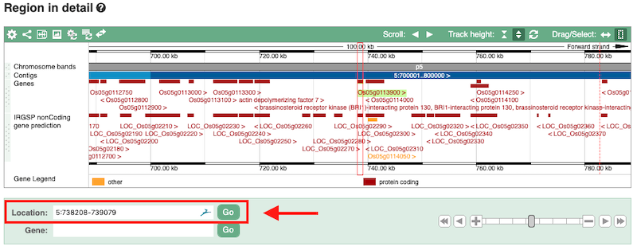
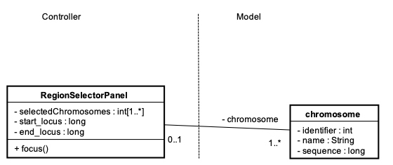

Selector de Regiones
Problema:Especificar regiones de interés dentro del genoma.

Imagen 6.20 Selección de una región del cromosoma 5. Fuente: Gramene
El usuario analiza o explora el genoma de una especie biológica enfocándose
en regiones concretas de la secuencia genómica. El usuario conoce las posiciones o coordenadas
exactas (locus del genoma) de las regiones de interés dentro de la secuencia.
Permitir al usuario especificar el número del cromosoma o cromosomas que desea analizar y la
coordenada de inicio (locus inicial) y fin (locus final) de la región de interés. Si se
seleccionan varios cromosomas, las coordenadas de inicio y fin se aplican a las secuencias
particulares de cada cromosoma.
- Asociación (relacionado a)
- Agregación (tiene un)
- Especialización (es un)

Imagen 6.21 Esquema del patrón Selector de Regiones
Imagen 6.22 Selector de regiones cromosómicas. Fuente: GENESIS 2.0
El formulario de la Imagen 6.22 muestra la implementación del patrón en la que se permite al usuario seleccionar varios cromosomas y las posiciones de inicio y fin son aplicadas a todos los cromosomas seleccionados.
AliasNingunoTipoPatrón